December Papers: Spend Your FLOPs Wisely
Welcome to Papers of the Month — Graphcore Research's effort to bring you our pick of the most interesting ML papers. In December we noted a collection of papers which took innovative approaches to allocating compute (FLOPs) to input data.
We start with the Byte Latent Transformer. This modifies the standard transformer to operate on patches, which comprise a variable number of input bytes, as determined by an entropy metric. The consequence of this is that compute is dynamically allocated towards "harder input data". This has some similarities with the Concept Model architecture, which also uses a flexible intermediate representation. The model performs autoregressive sentence generation in this modality-agnostic space, rather than token space.
The Memory Layers architecture allows extra parameters to be added to a model without increasing FLOPs. Decoupling these resources gives model designers more control (e.g. for co-design, to fit their hardware resources) and potentially facilitates more effective models in general.
Finally, the Phi-4 paper presents a rather different FLOPs angle: spending compute in the data-generation process to create higher quality data, leading to "student" models that (in some domains) out-perform their "teachers".
We hope you enjoy these month's papers as much as we did! If you have thoughts or questions, please reach out to us at @GCResearchTeam.
We hope you enjoy this month's papers as much as we did! If you have thoughts or questions, please reach out to us at @GCResearchTeam.
Byte Latent Transformer: Patches Scale Better Than Tokens
The key idea
Tokenization is an essential preprocessing step of modern language models; however, it requires independent training and inference stages and can often lead to unexpected and undesired behaviors (see for example comment by Karpathy). On the other hand, training directly on characters (bytes) is inefficient and leads to processing exceedingly long sequence lengths.
In this paper, the authors present a new transformer-based architecture called "Byte Latent Transformer" that operates directly on bytes, but avoids the issues associated with a naive byte-level model implementation. Their experiments scale-up the architecture to 8B parameters and show promising results when compared to the standard transformer with tokenization.
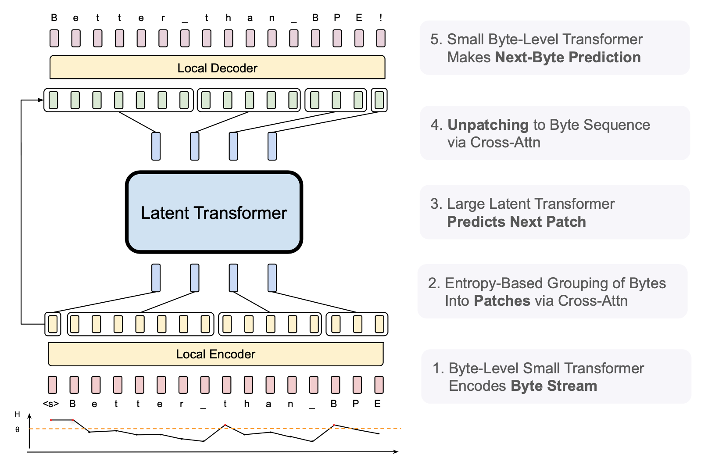
Background
The first stage of processing a string of text with a language model is tokenization: sentences are split into sub-words using previously learned rules (e.g. byte pair encoding), and the model generates the output one token at a time. However, using sub-words as elementary units can lead to surprising behaviors, such as susceptibility to spelling errors and difficulties operating with numbers. Byte-level models avoid this by operating directly on characters, however this can be highly inefficient as the full model needs to be run for every generated character.
A closely-related previous paper MegaByte tries to find a balance between the two worlds through a hierarchical approach: use a "big" transformer to predict groups of bytes (patches) together with a "small" transformer that generates the individual bytes using the big model's prediction. Byte Latent Transformer builds upon similar ideas and aims to extend this approach, by allowing dynamic patch sizes, as well as scaling-up the architecture.
Their method
The architecture of the Byte Latent Transformer follows a hierarchical approach (Figure 1): the initial local byte-level encoder encodes groups of bytes (patches), feeding these patch embeddings into a large latent transformer. The latent transformer predicts the next patch, and these next-patch embeddings are finally fed into a local decoder which generates the next-byte predictions. Let's now take a look at the individual stages in more depth.
Patching
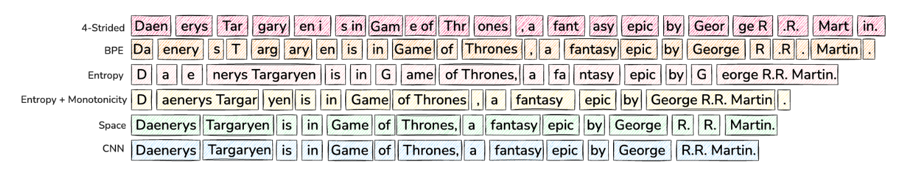
The first stage is grouping bytes into patches that will be individually processed by the large transformer. In MegaByte, the authors chose a fixed pre-defined number of bytes to group (e.g. 4 or 8). Ideally, however, patches should be equally "information-dense" and bytes should be grouped so that they can be effectively predicted together by the latent transformer.
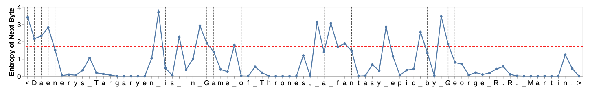
In order to do this dynamically, the authors chose to train a separate small character-level LLM that estimates the probability distribution over the next character. Then, the patch boundary is chosen as the point where the next-character entropy jumps, i.e., we separate patches as soon as the next character is "hard enough" to predict. This is done by either setting a global entropy threshold that needs to be exceeded, or when the entropy change between the steps is sufficiently large.
Local encoder
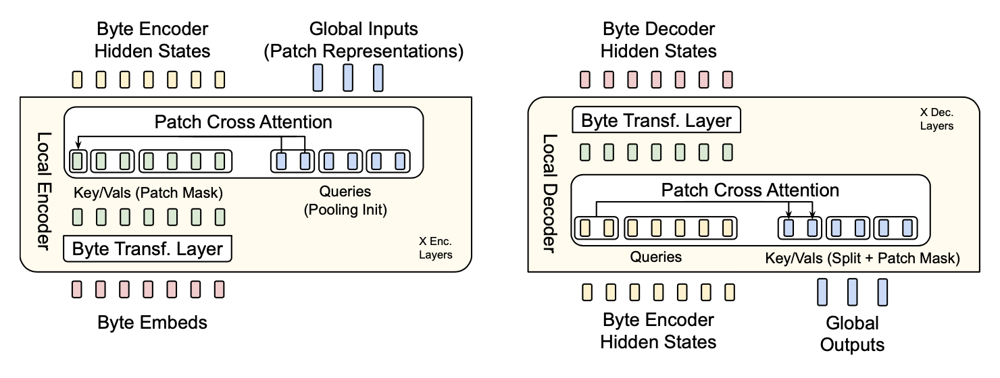
The job of the local encoder (Figure 4, left) is to take the input byte sequence and output the sequence of patch embeddings to be processed by the latent transformer. The byte sequence is passed through a set of standard transformer layers (self-attention with a local window + feed-forward network); after each transformer layer, a cross-attention layer is added whose role is to pool the byte-representations into the patch representations (i.e., patch representations are the queries, and byte representations are the keys/values). Each patch representation only cross-attends to the bytes within its patch boundaries.
Latent transformer
Latent transformer takes the patch embedding sequence generated by the local encoder, and outputs "next-patch" embeddings. This is the standard transformer architecture that consumes the bulk of the model FLOPs, with the main difference being that its output is a patch embedding vector, instead of a probability distribution over the next token.
Local decoder
Finally, the local decoder (Figure 4, right) takes both the final byte encoder hidden states, and the patch embeddings output by the latent transformer, and generates the next byte one-by-one.
Its architecture is very similar to the local encoder with a combination of the standard transformer layers and cross-attention layers, but the roles are inverted: the byte sequence now act as queries, and the key/value pairs are projected from the final latent transformer patch embeddings. The byte sequence embeddings thus pass through a sequence of cross-attention layers, followed by standard self-attention transformer layers.
Results
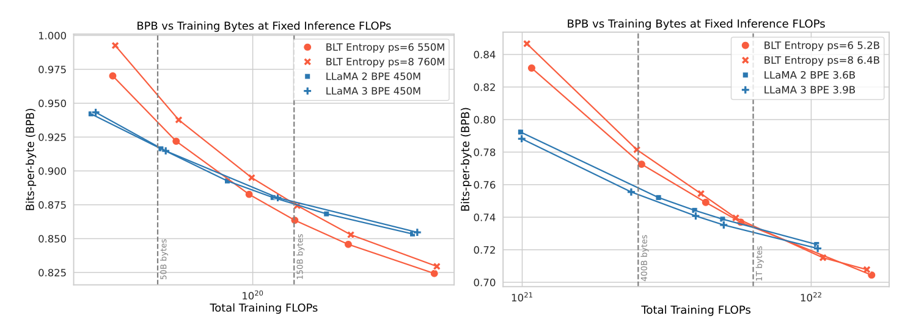
Figure 5 shows the scaling trends for a fixed inference budget — note that as patch sizes can be larger than the average token size, the BLT models can have more parameters than an equivalent standard transformer architecture (as the bulk of the parameters is in the latent transformer that is called per-patch). This also means that the number of parameters can be increased by increasing the average patch size while fixing the total FLOPs consumed. The scaling curves show that, while at the "Chinchilla compute-optimal" point (left vertical line) the standard Llama architecture beats BLT, further training leads to a crossover point where BLT yields a lower loss.
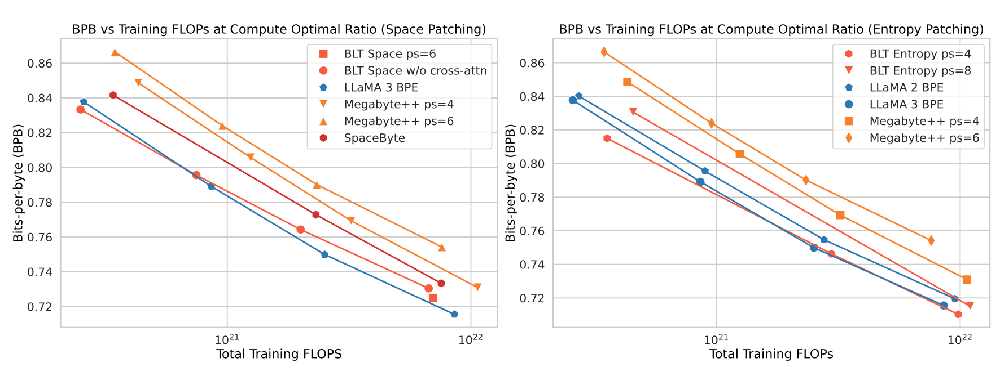
Figure 6 shows further results at the compute-optimal training tokens/model size ratio, where for BLT models this corresponds to the latent transformer size. The results notably show that both "space-patching" (i.e. dividing patches at whitespaces) and entropy-based patching beat the MegaByte approach, while the entropy-based patching performs the best with the average patch size of four bytes.
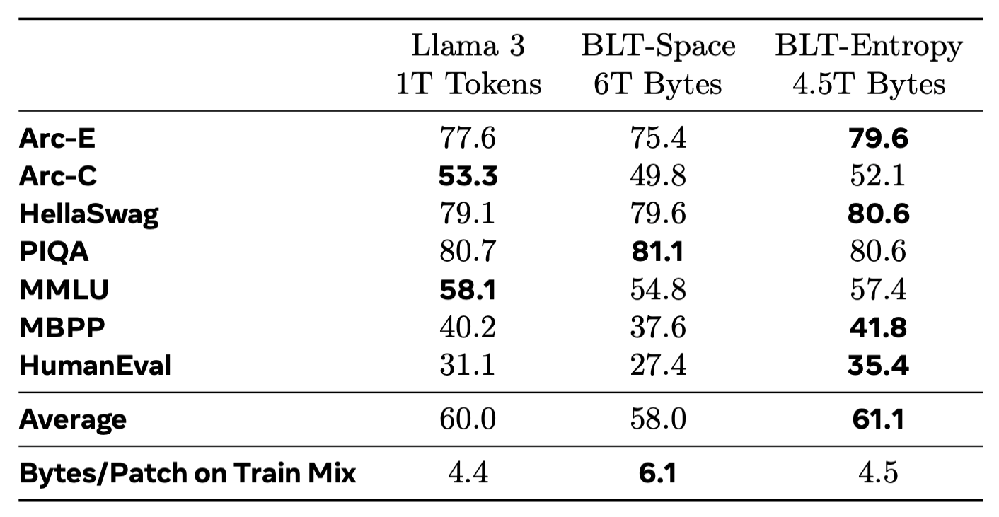
Finally, extending the training over the compute-optimal point and comparing the results on standard downstream tasks, BLT shows an overall favorable performance compared to the standard Llama 3 architecture. Additional character-level tasks included in the paper also indicate much strong performance in settings where sub-word understanding is required.
Overall, Byte Latent Transformer shows that a tokenizer-free hierarchical approach could be a promising direction for future language models as the authors show strong performance compared to the standard transformer-based Llama architecture.
Large Concept Models: Language Modeling in a Sentence Representation Space
The key idea
Language models get the Joint Embedding Predictive Architecture (JEPA) treatment (gets JEPA-dised?)! The authors develop a proof-of-concept model that tries to break a document into a set of concepts based on sentence structure. Using a predictive encoder-decoder model, they train the model to predict the embedding of the next concept in the sequence. They show promising signs of a model that can efficiently produce coherent summaries of long documents without the need for autoregressive token generation.
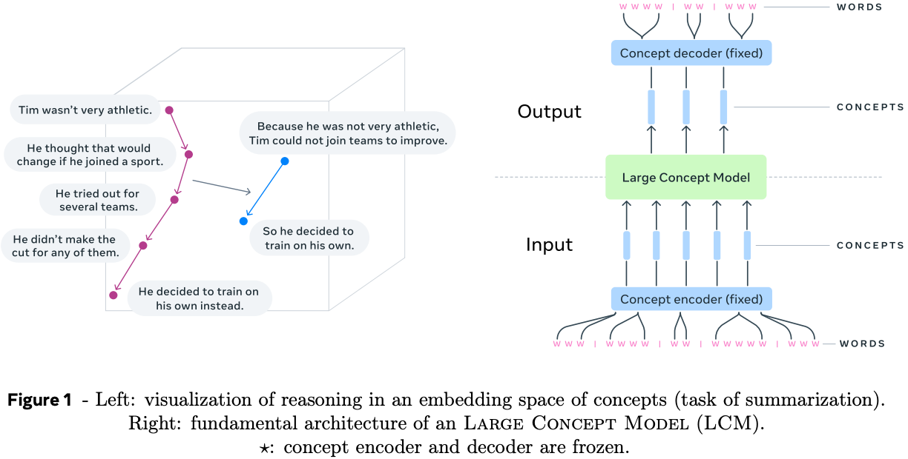
Background
The core intuition motivating the design of this model is that tokens are not the best representation to learn high-level structure in natural language data. In particular, they argue that since the typical generating process for documents is that a human sits down to write a bullet point plan of the points they want to make, then expands upon each of these points to provide additional context and fluency, then refines until they are happy with the result. They point out that this generative process appears to start from something closer to an abstract concept space (bullet point plan), then fills details in token space. If they could capture this process in a generative model this should also improve language model efficiency, since we would not need to use a wasteful auto-regressive process to generate text, but could reduce the number of auto-regressive steps by at least an order of magnitude by sampling sequentially in a more compact latent concept space instead.
Their method
There is an inherent challenge in both defining a concept space and a generative process that maps concepts to tokens. The authors address each of these challenges in turn.
Starting with the concept space, the authors use a sentence-level encoder-decoder transformer model trained as on a variety of tasks (machine translation, denoising, text-to-speech). They reason that concepts are better represented by phrases or sentences (10 - 20 tokens each), and that each of these tasks would be able to distil phrases into a common vector space that can represent concepts and be decoded back into semantically similar text.
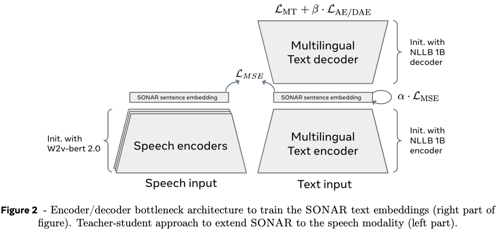
For simplicity, we'll only provide a detailed outline of the concept predictor the authors use for large scale experiments as the authors played around with a number of different variants. They settled on a "Two-Tower" architecture comprised of a contextualiser and a denoiser. The contextualiser is a decoder-only transformer model that takes a sequence of concept vectors and encodes them into the last hidden state by a causal mask in self-attention layers. The output of the contextualiser is fed to the denoiser via a cross-attention in each transformer block, which is used to transform noise into a clean prediction of the next concept via diffusion.
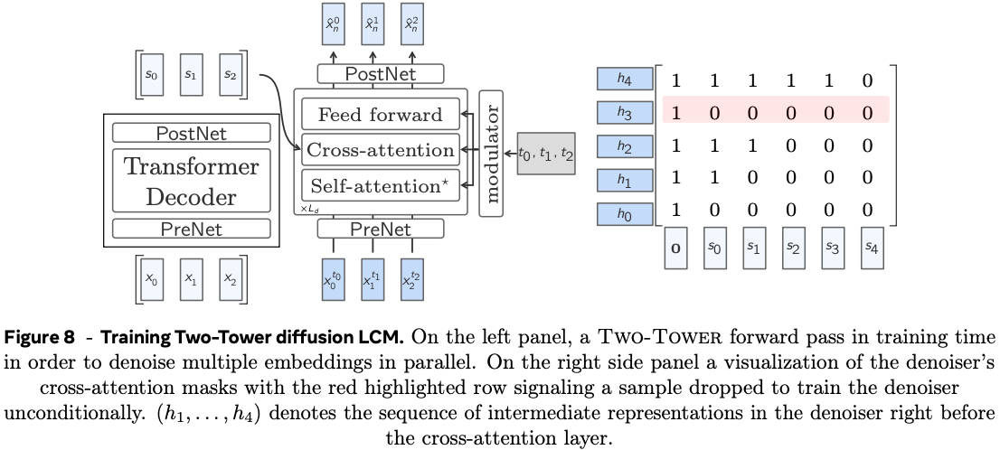
Results
The authors evaluate the model on summarisation tasks and compare with similarly sizes large language models with 7-8B parameters. Summarisation quality is a notoriously tricky capability to evaluate, so a mixture of n-gram based metrics and model-based metrics are used. In general the authors find that their large concept model performs similarly to large language models, although notably take a hit on fluency metrics (CoLA) for short-form summaries, and model-based source attribution metrics (SH-4). This is somewhat difficult to draw conclusions about since fluency is a core competency of large language models and model-based source attribution metrics are highly sensitive to data leakage.
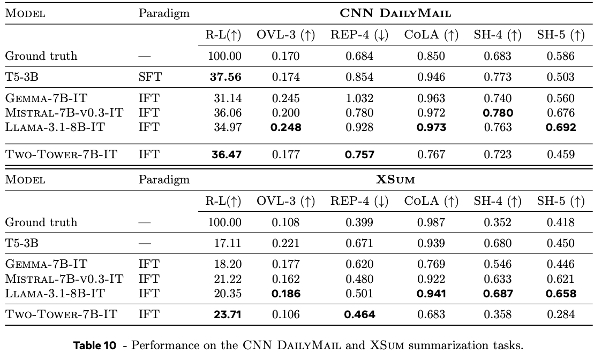
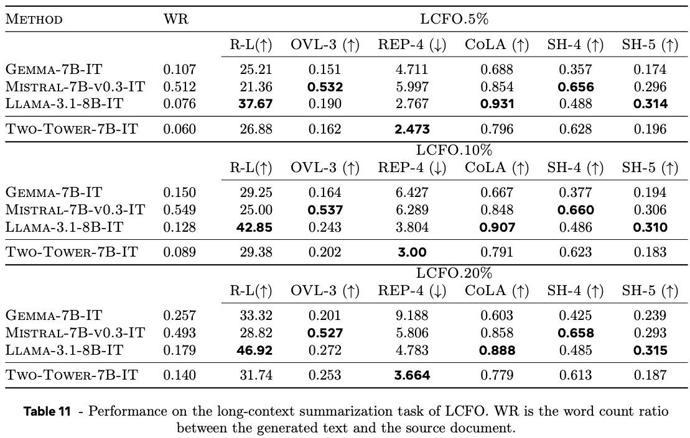
The authors also demonstrate that they can exploit the multi-lingual encoder model to perform zero-shot summarisation in many more languages than Llama 3.1, trained on a much smaller set of languages, demonstrating useful generalisation properties.
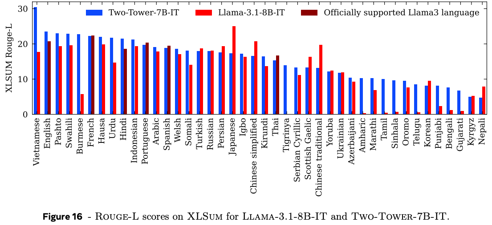
Takeaways
I can believe that this is a step in the right direction for incorporating useful notions of hierarchy into generative language models. This was an interesting proof-of-concept study (I wish there was a different phrase in this case) of large concept models. There is clearly a lot of room for improvement, from stronger capturing of "concept" vectors via improved encoders, to more believable benchmarks of summarisation quality, extensions to other natural language tasks (e.g., reasoning, long-form question answering), and hyperparameter stability and quality of the generation process.
Memory Layers at Scale
The key idea
When scaling up LLMs, we usually increase the number of trainable parameters and the amount of training/inference compute together. This is what happens if you increase transformer width or depth since each parameter is used once per input token. In contrast to this, memory layers add a large but sparsely accessed "memory" parameter, allowing a vast increase in trainable parameters with a minimal increase in training and inference compute. This paper adapts previous ideas for memory layers to produce a model architecture that works at scale and compares favourably to the dense Llama 2 and Llama 3 families.
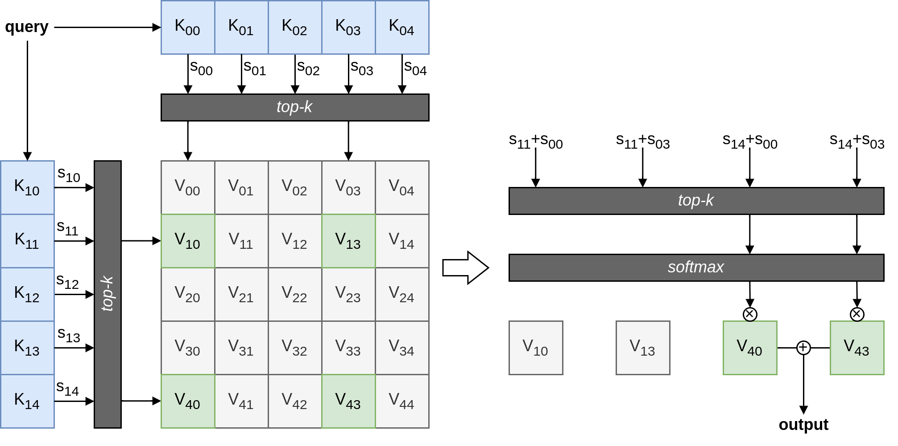
Background - memory layers
A memory layer resembles sparse multi-head attention, except that the keys and values are directly trainable parameters, rather than projections of an input activation. The process follows:
- Derive a query from the input via a small query MLP.
- For each head, compute scores via dot product of query with every key.
- Select the top-k scores.
- Softmax selected scores to get weights.
- Compute the weighted sum of selected values as the output.
Unfortunately, this design has a high compute cost as the memory size is increased, since the query-key dot product is exhaustive. This is remedied using product keys, which compute similarity against two distinct sets of keys \(K_1\) and \(K_2\) to give score vectors \(s_1\) and \(s_2\), then the score for a given value \(V_{ij}\) is \(s_{1i} + s_{2j}\). This means the amount of compute scales as \(\sqrt{N}\) for memory size \(N\). The process is illustrated in the figure above.
Their technique
This work makes a few architectural modifications to the product key memory layer to produce a Memory+ layer and trains it at scale in a modern Llama transformer architecture. The changes are:
- Wrap multi-head product key memory within a swiglu-gated MLP. The memory layer replaces the linear up-projection.
- Replace 3 MLP layers, equally spaced in the transformer stack, with memory layers, which have distinct query MLPs and keys, but shared memory values.
- Use a small key dimension. For hidden size \(H\), the value dimension is set to \(H\), while each product key is size \(H/4\).
For example, the largest model they train is based on Llama 3, replacing 3 MLPs with product key memories with \(2 \times 4096\) keys, so the number of memory items (shared between all memory layers) is \(4096^2 = 16\textrm{M}\). Each value is a vector of size \(4096\), so the number of memory parameters (which is dominated by values) is \(4096^3 = 64\textrm{B}\).
Results
To test their architecture, the authors train autoregressive language models and evaluate multiple downstream tasks. They show improvements with training FLOP parity across models from 134M to 8B parameters, compared against mixture-of-expert models as well as dense models and vanilla product key memory layers.
Their headline result shows task performance improvement as the memory layer is scaled, allowing a 1.3B model with Memory+ layers to approach the performance of a 7B model without memory layers (dashed line).
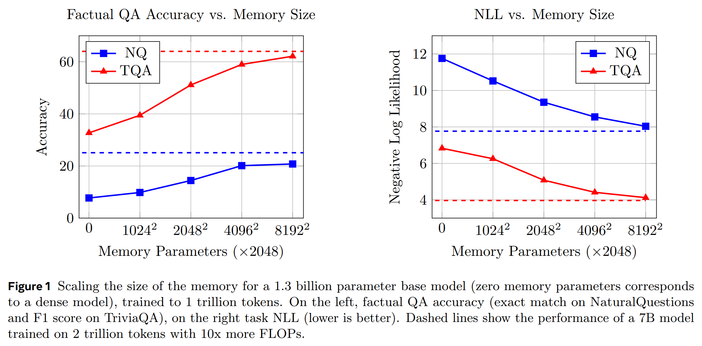
Their largest model (8B) follows the Llama 3 architecture, and generally outperforms the dense baseline after 1T training tokens, although not consistently across all downstream tasks.
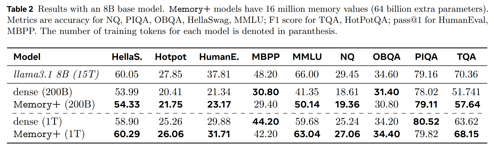
Takeaways
The work shows promise for product key memory layers at scale. As the authors note, gains are more pronounced in early training, so it will be important to confirm the benefit for inference-optimised overtrained LLMs. They also highlight the challenge of optimising and co-evolving sparse techniques such as this with ML hardware.
Phi-4 Technical Report
The key idea
Can a small model be trained using synthetic data and exceed performance of its teacher model?
The authors present a data generation recipe that allows them to train a state of the art 14B parameter model. They combine "organic" seed text, prompting, and a teacher model (GPT-4o), to train a model which outperforms its teacher on 3 reasoning benchmarks. Synthetic data is not a "cheap" substitute for organic data but offers:
- structured and gradual learning, better suited to the auto-regressive nature of the model ("organic" text is not written linearly).
- better alignment with inference contexts during pretraining.
Their method
"Phi" is a family of small models developed by Microsoft Research. The focus for these models is to maximise reasoning performance through the selection of an "optimal data mixture". Phi-3, the previous model in the family, was found to have very good (in class) performance up to a size of 7B but did not compare favourably at higher model sizes. That model was already trained on synthetic data, but only during the latter parts of pretraining, in contrast Phi-4 uses synthetic data from the very beginning of the pretraining process.
To train Phi-4, the authors created 50 broad types of datasets for approximately 400B tokens of synthetic data. Synthetic data is not created out of thin air by prompting the teacher model: the authors use chunks of "organic" text and use those to "seed" multi-turn LLM based workflows that generate the synthetic data used to train Phi-4. The authors describe their approach to find high-quality seed texts:
- Identify web and code-based seeds, which are chunked and filtered for factual and reasoning content
- Collect question datasets from forums and websites: questions are filtered by difficulty by generating answers and assessing how consistent responses are across multiple generations, very easy and very hard questions are dropped
Once identified, "organic" seeds are processed by pipelines which:
- augment them by rewriting the content into exercises, discussions or structured reasoning tasks
- iterates with self-revision to improve the answers provided in those exercises
- checks code and other scientific data through execution loops and tests
Specifically the authors describe pipelines that:
- create question and answer pairs from other text forms by identifying logical progressions in the text
- and generate instructions from code snippets in a process they call "instruction reversal"
The authors emphasize the importance of clean and correct organic text to act as seeds for synthetic data. As a consequence they invested in:
- Targeted acquisition of reasoning dense documents (arXiv, PubMed, GitHub, books)
- Filtered web dumps with non-LLM classifiers trained on 1M LLM generated annotations
- Created multi-lingual datasets with the same classifiers
- and custom extraction and cleaning pipelines to ensure uniformity between heterogeneous data sources
To select their data mixture, the authors varied the proportion of each type of data used to train a 7B model with 1 trillion tokens. The final data mixture is shown in Table 5, reproduced below.
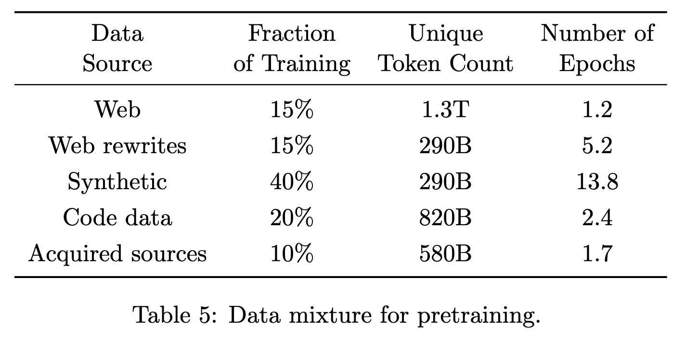
The other interesting contribution of this report targets post-training: they introduce "Pivotal Token Search" (PTS). The authors' insight is that the generation of correct answers is dependent on the generation of a few key tokens. If those tokens can be identified from samples generated by the pretrained model, they can be used during DPO to provide token-level preference information. This method requires the generation of many alternative answers from the pretrained model to get an accurate assessment of the probability. While the reader is referred to the paper for a detailed description of the algorithm, Figure 3, reproduced below, plots the change in the probability of a correct answer during the answer to a math question.
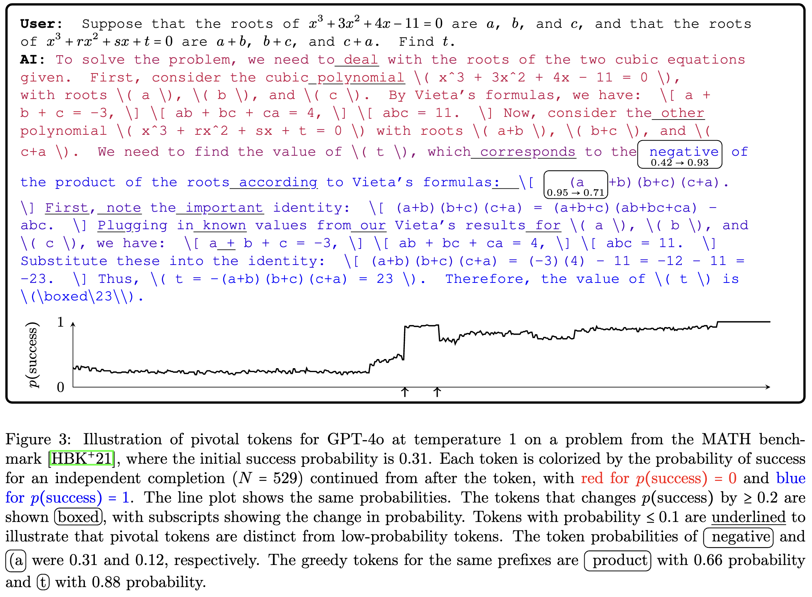
Results
The training pipeline described in the report leads to a 14B parameter model with surprising performance on GPQA and MATH benchmarks, and the November 2024 AMC 10/12 test (a math competition held after the model was trained). Phi-4's score of 91.8 is higher than all other non-reasoning models, including its teacher model, GPT-4o. However, long chain-of-thought models, like OpenAI-o1, score above 120 (out of 150) in the AMC benchmark, but at a much greater inference cost, suggesting a trade-off between the two approaches.
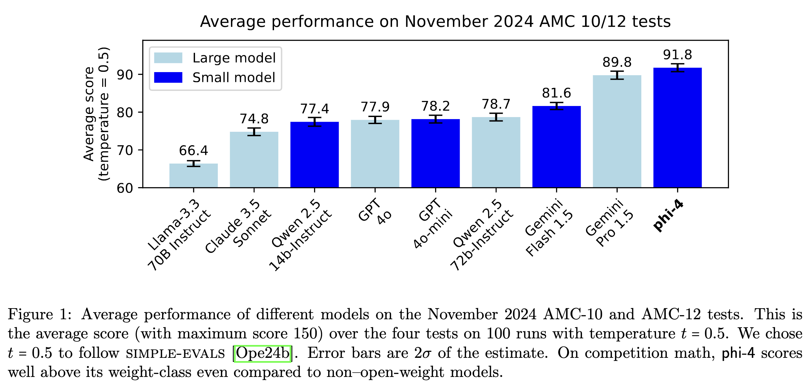
Beyond the final model, comparison with Phi-3 and the ablations of the data mixture show that relying on more than 50% of synthetic data in the early phases of pretraining lead to significant improvements on reasoning heavy benchmarks. The table below selects a few columns of tables 2 and 3 from the paper which compare performance of models at the end of pretraining to the previous generation phi-3-medium (pretrained only).
| Model | MMLU pro | MBPP (Code) | MATH | TQA (Knowledge) |
|---|---|---|---|---|
| phi-4 (4k) | +10.3 | +6.8 | +8.9 | -0.7 |
| phi-4 (16k) | +8.9 | +9.6 | +8.4 | -1.5 |
| Synthetic (13B) | +4.0 | +5.0 | +4.9 | -14.8 |
| Synthetic + Web Rewrites (13B) | +4.1 | +7.6 | +8.1 | -7.7 |
The results table highlights the effectiveness of synthetic data on language understanding, code and math benchmarks: models pretrained mostly on synthetic data are several points above Phi-3 which saw much more web data. Meanwhile web data remains necessary for performance on general knowledge tests.
Finally the authors observe that their post-training technique of chat SFT, pivotal token DPO, and judge guided DPO create a model which refuses to answer in many situations where it would have been wrong. Figure 6 from the report shows that PTS (labelled DPO Stage 1) reduces the rate of hallucination on the SimpleQA benchmark from 38.7% to 17.4%.
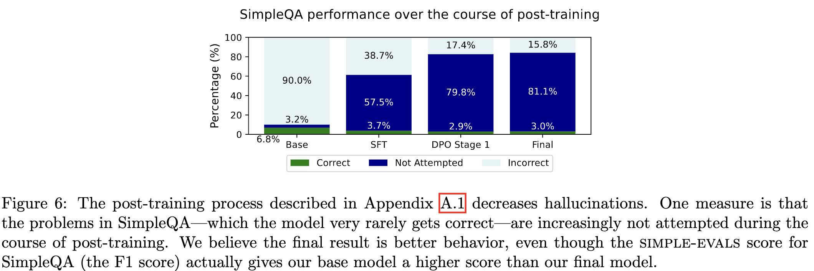
Takeaways
Far from triggering model collapse [Shumailov et al.] the Phi team manages to improve the performance of their model family. The authors present a comprehensive case for carefully curated synthetic data. They demonstrate that it can be used to train a model at scale, close to SOTA performance on reasoning benchmarks. The claim that Phi-4 is surpassing its GPT4o teacher is exciting but less convincing: the evaluations on which it outperforms the teacher are fairly constrained benchmarks where the emphasis of Q&A in the training mix might give it an unfair advantage.